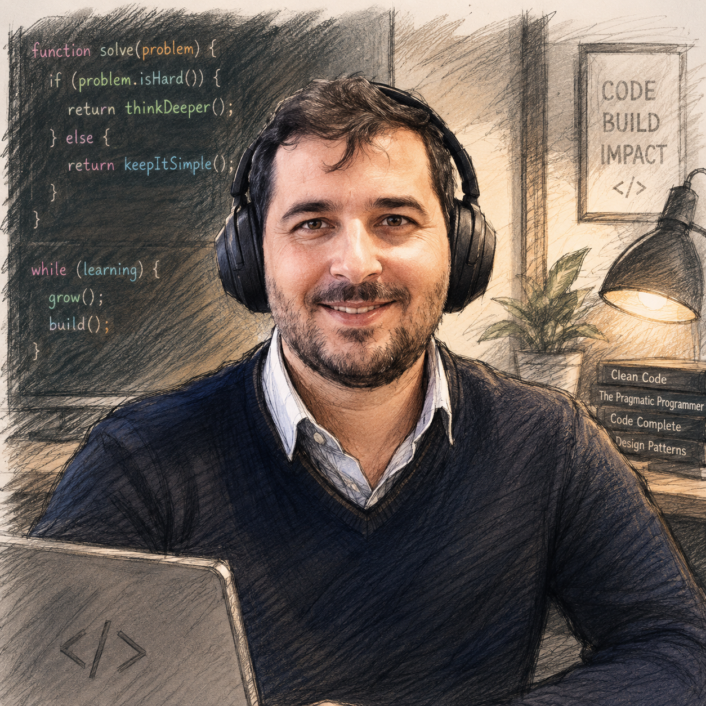
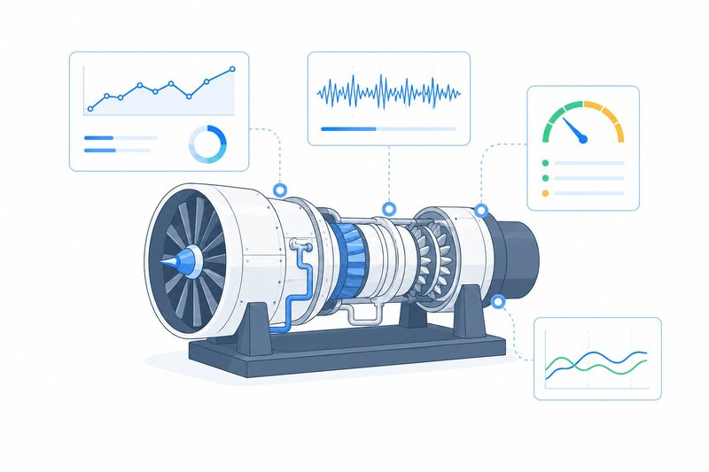
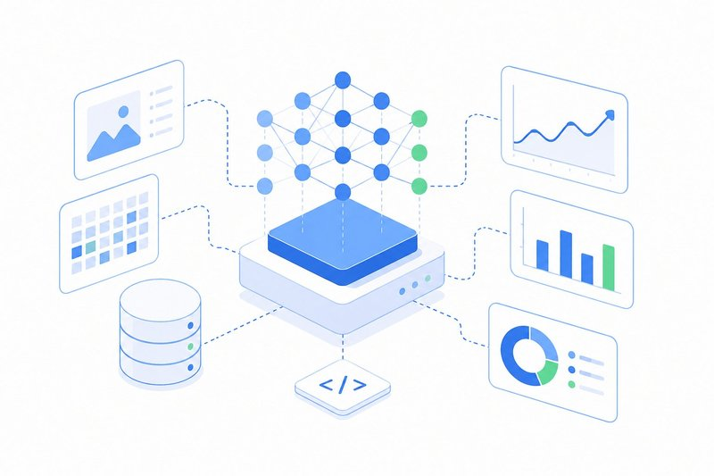
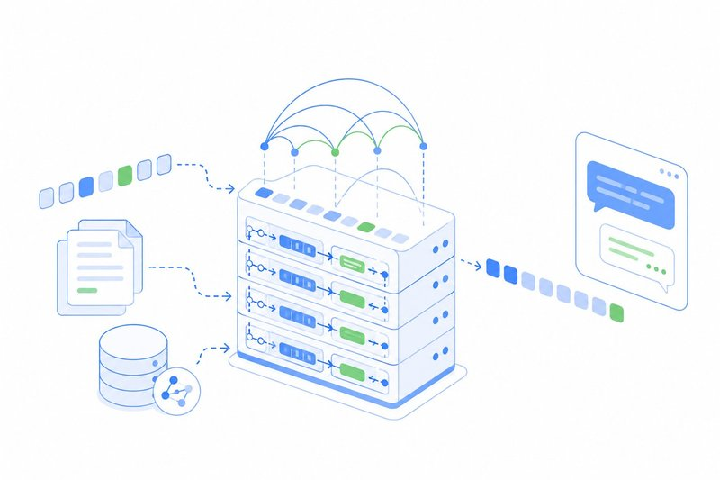
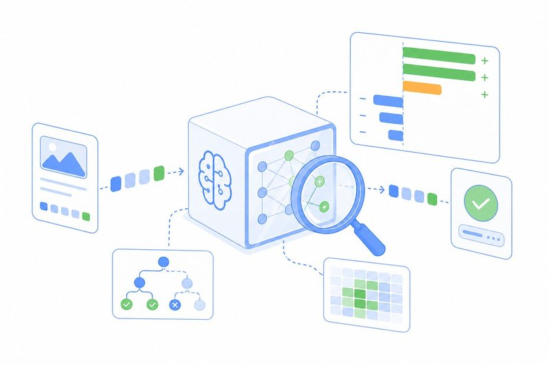

Oguz Bektas
Data Scientist & Researcher · ML, Deep Learning, LLMs
Industrial AI · Predictive maintenance · Explainable ML
About
Data scientist building machine learning systems for industrial applications. I work across the full stack — from raw sensor signals and time-series feature engineering to deep learning models, LLM-powered tooling, and explainable AI for high-stakes decisions.
My focus is making complex models trustworthy and useful in production: predicting failures before they happen, estimating remaining useful life, and turning black-box predictions into something engineers can actually act on.
Focus Areas

Predictive Maintenance & PHM
Building data-driven systems that watch industrial assets in real time — catching failures before they happen, estimating remaining useful life on , and turning raw sensor noise into actionable health indicators for maintenance teams.

Machine Learning & Deep Learning
End-to-end ML systems for sequential industrial data — from feature engineering on raw signals to fine-tuning time-series foundation models on domain-specific corpora, with production deployment across modern data-platform stacks.

Large Language Models
Applied LLM engineering — retrieval pipelines with vector search and hybrid retrieval, structured generation with schema validation, multi-agent orchestration with tool use, and evaluation harnesses that hold up when language models do real work.

Explainable AI
Making model outputs interpretable for the engineers who act on them — SHAP-based feature attribution, counterfactual explanations, CAM-guided subsequence selection for multivariate time series, and decision-support dashboards that surface the why behind each prediction.
Stack
Currently
Working on industrial AI projects — prognostics, LLM-powered tooling, and applied research with a clear path to production.
Connect
LinkedIn → Google Scholar → ResearchGate → Google Sites → GitHub Pages (Academic Profile) → X/Twitter → Warwick Grad → Hugging Face → Academia → About.me → GitLab Pages → Medium → Books Google →
Hakkında
Endüstriyel uygulamalar için makine öğrenmesi sistemleri geliştiren bir veri bilimci ve akademik araştırmacıdır. Çalışmaları; ham sensör sinyallerinden ve zaman serisi özellik mühendisliğinden derin öğrenme modellerine, LLM tabanlı araçlara ve yüksek etkili karar süreçleri için açıklanabilir yapay zekâ yaklaşımlarına kadar uzanır.
Temel odak noktası, karmaşık modelleri üretim ortamında güvenilir ve kullanılabilir hâle getirmektir: arızaları gerçekleşmeden önce tahmin etmek, kalan faydalı ömür kestirimi yapmak ve kara kutu model çıktılarını mühendislerin aksiyon alabileceği anlaşılır bilgilere dönüştürmek.
Odak Alanları
Kestirimci Bakım ve PHM
Endüstriyel varlıkları gerçek zamanlı izleyen veri odaklı sistemler geliştirme; arızaları oluşmadan yakalama, kalan faydalı ömrü kestirme ve ham sensör verisini bakım ekipleri için anlamlı sağlık göstergelerine dönüştürme.
Makine Öğrenmesi ve Derin Öğrenme
Ardışık endüstriyel veriler için uçtan uca ML sistemleri; ham sinyallerden özellik çıkarımı, zaman serisi temel modellerinin alan verisine uyarlanması ve modern veri platformları üzerinde üretim dağıtımı.
Büyük Dil Modelleri
Uygulamalı LLM mühendisliği; vektör arama ve hibrit retrieval kullanan RAG hatları, şema doğrulamalı yapılandırılmış çıktı üretimi, araç kullanan çok ajanlı orkestrasyon ve sağlam değerlendirme akışları.
Açıklanabilir Yapay Zekâ
Model çıktılarını aksiyon alacak mühendisler için yorumlanabilir hâle getirme; SHAP tabanlı özellik katkısı, karşı-olgusal açıklamalar, çok değişkenli zaman serilerinde CAM destekli alt dizi seçimi ve her tahminin nedenini gösteren karar destek panelleri.
Teknoloji Yığını
Güncel Çalışmalar
Endüstriyel yapay zekâ projeleri üzerinde çalışmaktadır: prognostik analiz, LLM destekli araç geliştirme ve üretim ortamına taşınabilir uygulamalı araştırma.
Bağlantılar
LinkedIn → Google Scholar → ResearchGate → Google Sites → GitHub Pages Akademik Profil → X/Twitter → Warwick Grad → Hugging Face → Academia → About.me → GitLab Pages → Medium → Books Google →